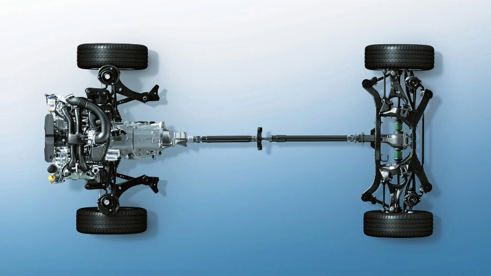

Symmetrical All-Wheel Drive

Unlike "on‑demand" AWD systems that send power only when wheels slip, Subaru's Symmetrical AWD is full‑time. The drivetrain is perfectly balanced left‑to‑right because the Boxer engine and transmission are mounted longitudinally (front‑to‑back), allowing equal‑length half‑shafts. This eliminates torque steer and provides neutral handling even on slick surfaces.
The system continuously monitors wheel speed, throttle input, and steering angle. In normal driving, power is split 60/40 front/rear (on CVT models) or 50/50 (manual). When slip is detected, torque is instantly redistributed – up to 100% to either axle. For off‑road, X‑MODE adds hill descent control and optimized traction. Whether you're on a snowy highway or a muddy trail, Subaru AWD gives you unmatched stability.
Versions of Subaru AWD
- Active Torque Split (CVT): 60/40 nominal, variable
- Viscous Coupling (Manual): 50/50 fixed with limited‑slip
- VTD (Variable Torque Distribution): Performance‑oriented, used on WRX
- X‑MODE: Enhances AWD for deep snow/mud, includes hill descent
“Symmetrical AWD is why Subaru owners trust their cars in any weather.”